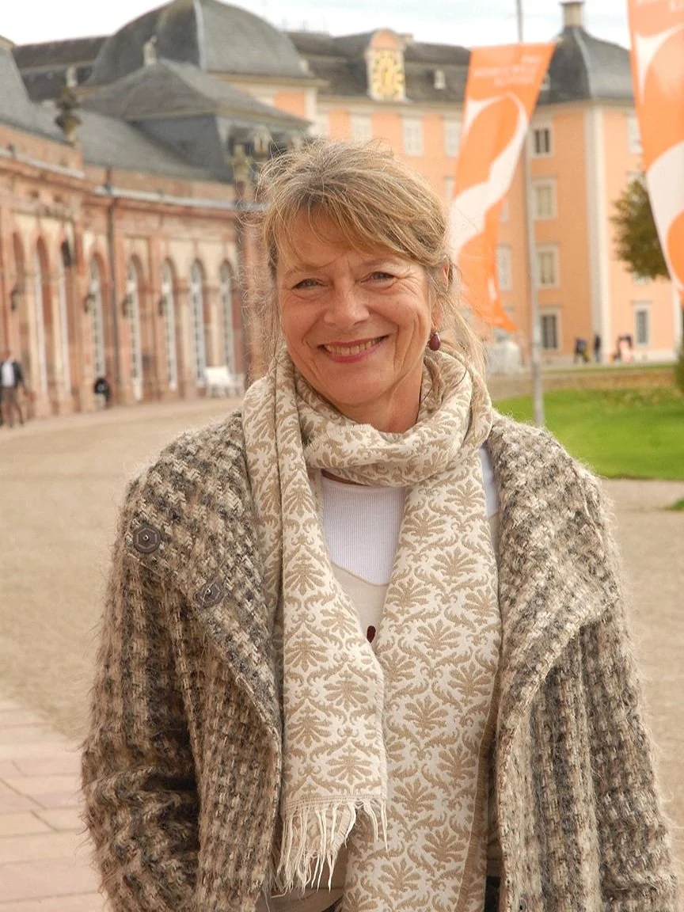
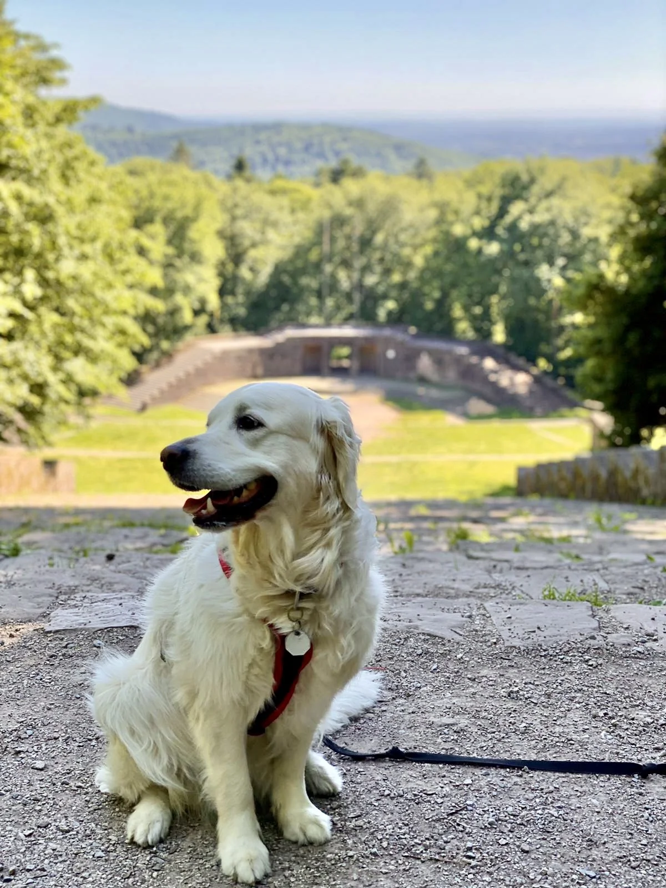
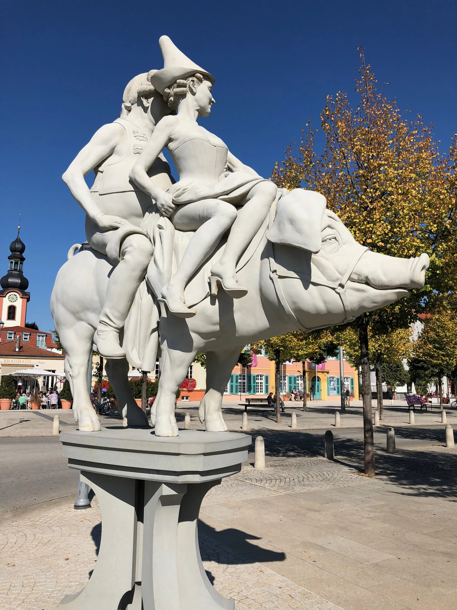
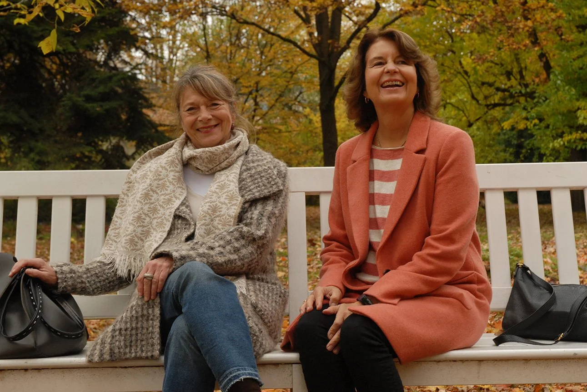

Heidelberg und die Region entdecken – mit persönlichen Stadtführungen
Entdecken Sie das romantische Heidelberg mit seiner beeindruckenden Schlossruine, Schwetzingen – das „kleine Versailles“ mit Schloss und Garten –, die barocke Mannheimer Residenz oder Speyer mit seinen UNESCO-Weltkulturerben, dem Speyerer Dom und dem Judenhof. Bei uns erhalten Sie persönliche Führungen, die wir auf Ihre Wünsche und Interessen zuschneiden.
Angela Wende und Christiane Berger Waldenegg lernten sich während ihrer Ausbildung zu Schlossführerinnen für Heidelberg, Mannheim und Schwetzingen kennen. Christiane ist Kunsthistorikerin, Angela Betriebswirtin. Schon bald merkten sie, dass sich ihre Fachgebiete auf überraschende – und, wie sich zeigte, untrennbare – Weise ergänzen.

Christiane
„Schläft ein Lied in allen Dingen,
Die da träumen fort und fort,
Und die Welt hebt an zu singen,
Triffst Du nur das Zauberwort“
Joseph von Eichendorff
Ich freue mich darauf, Ihnen die Schönheiten unserer Region zu zeigen und längst vergangene Zeiten wieder aufleben zu lassen.
Angela
Mitglied im BVGD – Bundesverband der Gästeführer in Deutschland e. V.
DIN EN 15565 zertifizierte Gästeführerin Speyer; Schlossführerin Heidelberg, Schwetzingen und Mannheim. Reiseverkehrskauffrau (IHK).
Um es mit Goethe zu sagen: „Die Stadt (Heidelberg) in ihrer Lage und mit ihrer ganzen Umgebung hat, man darf sagen, etwas Ideales…“. Ich freue mich darauf, Ihnen die schönen Seiten des Rhein-Neckar-Raums zu zeigen!

Nellie
Nellie ist eine äußerst freundliche Golden Retrieverin, geboren 2017. Sie liebt Menschen und verträgt sich mit allen Hunden. 2022 hat sie gemeinsam mit Angela die Ausbildung zum Besuchsbegleithunde-Team in der tiergestützten Intervention abgeschlossen.
Auf ausgewählten Spaziergängen begleitet sie uns.
Impressionen


Was unsere Gäste über uns sagen
Helga, Hamburg
Liebe Frau Berger-Waldenegg,
Danke, danke, danke!
Sie haben mit uns eine Führung durch den Schwetzinger Schlossgarten gemacht - ich konnte mich garnicht mehr einkriegen. Ohne ihre fachkundige Führung hätte ich nicht mal ein Drittel gesehen! Vor lauter Begeisterung vergass ich, dass ich normalerweise garnicht mehr soviel laufen kann. Und diese Geduld, die Sie gezeigt haben – ein ganz herrliches Erlebnis!
Laura, Durham, NC
I took the guided walking tour through Speyer with Angela Wende, and cannot recommend this tour enough! Angela was very knowledgeable about Speyer's long past, and was able to answer all of our questions as she guided us around the UNESCO World Heritage Site, Speyer Cathedral, as well as the Old Town. We found the tour incredibly rich in history, and loved that Speyer is as beautiful as Heidelberg! Anyone visiting Heidelberg should absolutely add this tour to their to-do list!
Boris und Klaus, Hamburg
Wir haben eine Walking Tour durch die Heidelberger Altstadt gemacht. Wir wollten nichts auf unserer Tour verpassen und haben uns eine private Führung von und mit Angela Wende gebucht.
Üblicherweise sind wir keine großen Freunde von Führungen. Der Stadtspaziergang mit Angela Wende war jeden Schritt wert. Kurzweilig und informativ hat sie uns durch die historische Altstadt geführt und uns gleichzeitig zu Fans von geführten Touren werden lassen. Sehr empfehlenswert und jederzeit wieder.
Eric, New York
Situated as it is between the historic cities of Worms and Heidelberg, and mostly flattened during World War 2, I did not at first think that Mannheim had much to offer the tourist. But the Mannheimer Schloss is so large, and so full of historic beauty and information, that my tour with Angela as guide felt far too short.
Alexander, Palo Alto, CA
As a flight attendant I have the privilege to see a lot of the world - however, the guided walking tour of Schwetzingen gardens with Christiane Berger- Waldenegg of HeidelbergStuffToDo was highly entertaining and informative and opened my eyes to the rich history of Baroque Germany. I can highly recommend it!